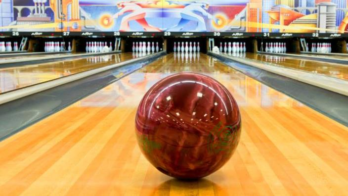

Hello, I am Anthony Cerulli, a senior at Averill Park High School. I am 16 years old and actively participate in the school's tennis and bowling teams. In my free time, I enjoy playing video games, creating music, spending time outdoors with friends, working out, and competing in tennis. I have composed original music and sound effects for the games "Fightatron" and "Echo Chambers," where I contributed to the audio design and atmospheric elements. My passion for technology and programming motivated me to develop this portfolio website to showcase my work and projects. Beyond academics, I am dedicated to exploring new music genres and experimenting with innovative sound design techniques.
